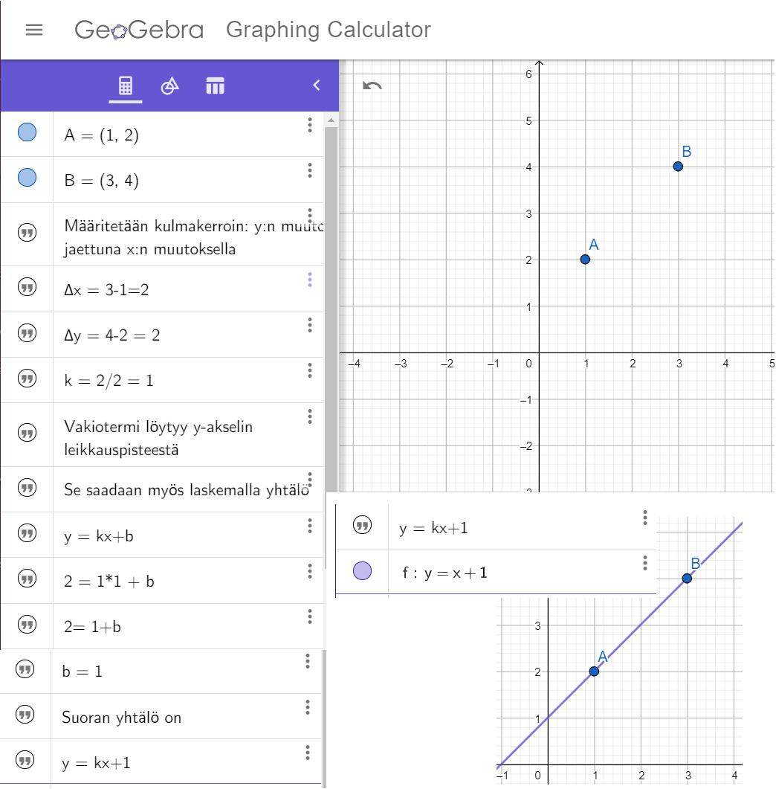

Vielä mennään, kovaa ja korkealta. Vaikka välillä aurinko paistaa.
Ohjeet kotitöihin. Lyhyemmät ohjeet ilmestyvät myös Wilmaan ennen kutakin tuntia.
Kaikkien tehtävien palautukset löytyvät peda.netistä. Kaikilla on sinne pääsy ja homma on helppo.
Kaikkien tehtävien palautukset löytyvät peda.netistä. Kaikilla on sinne pääsy ja homma on helppoa.
| Klo | Ma | Ti | Ke | To | Pe |
|---|---|---|---|---|---|
| 08.30—9.15 | |||||
| 09.25—10.05 | Fysiikka | ||||
| 10.10—10.55 | Fysiikka | ||||
| 11.40—12.25 | Matikka | ||||
| 12.30—13.15 | Matikka | ||||
| 13.40— | Maantieto |
Tunnit normaalisti.
Tiistaina: Kpl 9 risti- ja vieruskulma. Laske tehtävät vihkoon, paitsi tehtävä 8 mittaa GeoGebralla ja palauta Pedaan.
Keskiviikkona: Kpl 10 on sama kuin edellä, mutta nyt suorat ovat samansuuntaiset mutta eri paikoissa.
Torstai on oma laskupäivä: Geogebra tehtävä. Torstain geogebra-harjoitus (palatuksella). Piirrä geogebralla säännöllinen kuusikulmio ja viisikulmio käyttäen Geogebran harppia ja suoraa -- eikä geogebran valmista työkalua siihen. Ohjeet: pentagoni ja
Tulemme katsomaan vielä islamistista geometrista taidetta ja ohessa Common Core -standardin harppipiirustuksia.
Pidetään tunti normaalisti torstaina aamulla klo 0925 alkaen, kuten aina ennenkin.
Torstaina käytiin läpi kpl 5 ja tehtävät työkirjasta. Kotona katso videot sähkömagneettinen induktio ja hellan levyt sekä peltierin ilmiö. Peda.netissä on kaksi fysiikan tehtävää. Vastaa niihin.
Perjantaina klo 13.40 alkaen.
Sää ja ilmasto. Pilvet ja sateen synty.
Tee pedasta kappaleen 12 Sää tehtävät.
Kaikkien tehtävien palautukset löytyvät peda.netistä. Kaikilla on sinne pääsy ja homma on helppo.
| Klo | Ma | Ti | Ke | To | Pe |
|---|---|---|---|---|---|
| 09.00—10.00 | Fysiikka | ||||
| 10.10—10.55 | Matikka | ||||
| 11.40—12.25 | Matikka | Maantieto | |||
| 12.30—13.15 | Matikka | ||||
| 13.40— | Fysiikka | Matikka |
Pidetään normaalit tunnit tiistaista torstaihin, vaikka torstaina voidaan hieman tiivistää taas maantiedon kanssa yhteen.
Suoran yhtälön määrittäminen:
Torstaina matikassa kpl 21. Palauta Pedaan kuva viimeisimmästä matikan vihon sivustasi.
Vastaukset:
Pidetään tunti normaalisti maanantaina klo 1340 ja perjantaina klo 09 alkaen.
Maanantaina yksinkertaisia koneita, kpl 20 työkirjasta. Eka sivu vain. Katso Numberphilestä, miksi matemaatikon pöytä ei keiku: Fix a Wobbly Table (with Math)
Perjantaina vivut loppuun, kpl 20 työkirjasta. Katso videot Inclined Planes, Levers, Pulleys ja Fun Science Demos: The Lever.
Ei keskiviikkotuntia, vaan kaksi videota. Ensimmäinen video on osittain suomalaista tuotantoa, palkintoja voittanut, Indonesian sademetsien muutoksia kuvaava elokuva Green the movie. Toinen elokuva on Udinin, Udo Neumannin, tekemä orankidodumentti. Udini on media-alan ammattilainen ja pitkän linjan kiipelilyharrastaja, ja valmentaa mm. Saksan kiipeilymaajoukkuetta (ainakin silloin tällöin). Tämä elokuva on enemmän perinteinen dokumentti, mutta Udinillakin mielenkiintoinen tapa: Orangutas in wild Sumatra.
Torstaina pidetään tunti normaalisti. Meksiko ja vähän Latinalaista Amerikkaa. Tee tehtävät pedasta Meksiko — tehtävät. Katso Mexico-video.
Kaikkien tehtävien palautukset löytyvät peda.netistä. Kaikilla on sinne pääsy ja homma on helppo.
| Klo | Ma | Ti | Ke | To | Pe |
|---|---|---|---|---|---|
| 09.00—10.00 | Energia | ||||
| 10.10—10.55 | Matikka | Maantieto | |||
| 11.40—12.25 | Matikka | ||||
| 12.30—13.15 | Matikka | ||||
| 13.40—14.20 | Matikka | ||||
| 14.25— | Kemia |
Aloitetaan kertaus ja sovellettu matematiikka. Kaksi vaihtoehtoista reittiä, joku voi tehdä molemmat, jos kovasti haluaa.
Lisäksi hieman tilastomatikan alkeita — tai ne voitaisiin käydä kaikkien kesken energiakurssilla.
Vaihtoehto 2. Leikitään.
Virolaisista kirjoista etsityt sovelletun matikan (eli fysiikan) laskutehtävät. Käydään joka tunti/ viikko joku aihe läpi, sitten laskette tehtäviä ja tarkistetaan ne. Porkkanana numeron korotus fysiikan arvosanaan.
koulu.luntti.net/fysiikka.htmlMatikan kirjan vastaukset. Mutta, tie perille on mielenkiintoisempi kuin lopputulos (ja elivät elämänsä onnellisina loppuun saakka).
Pidetään tunti normaalisti torstaina.
1. Video: Marty Jopsinin Microminute-video. Käydään siitä pari tärkeätä asiaa.
2. Eksperimentti. Palauta kuvakollaasi työvaiheista (naru+tikku, keittäminen, väriaine ja odottelu) Pedaan. Siinä pitää näkyä kiteen kasvaminen joka päivänä. Tee sokerikide. Materiaali:
Työohjeet.
3. Tee työkirjasta sivujen 158-159 tehtävät.
Pidetään tunti normaalisti perjantaina.
Suomen väestö ja keskipiste. Tee tehtävät kpl 14 Pedasta. Suomen väestön keskipiste ja Suomen keskipiste. Lisäksi haasteita ja ongelmia keskipisteestä.
Jokainen keksii ainakin kaksi (2) kysymystä jatkoon päässeelle ryhmälle. Tämä ryhmä saa harjoitella vastaamista ja muut kysymistä. Tunti klo 09 alkaen.
{kind=link}
{kind=link}
{kind=link}
{kind=link}
{kind=link}
{kind=link}
{kind=link}
{kind=link}
{kind=link}
{kind=link}
{kind=link}
{kind=link}
{kind=link}
{kind=link}
{kind=link}
{kind=link}
{kind=link}
{kind=link}
{kind=link}
{kind=link}
{kind=link}
{kind=link}
{kind=link}
{kind=link}
{kind=link}
{kind=link}
{kind=link}
{kind=link}
{kind=link}
{kind=link}
{kind=link}
{kind=link}
{kind=link}
{kind=link}